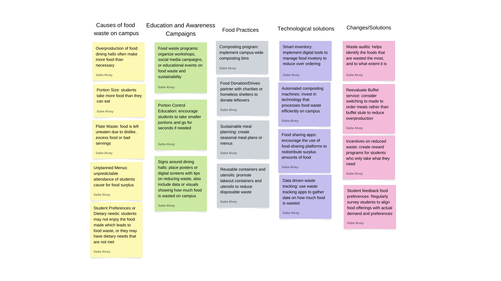
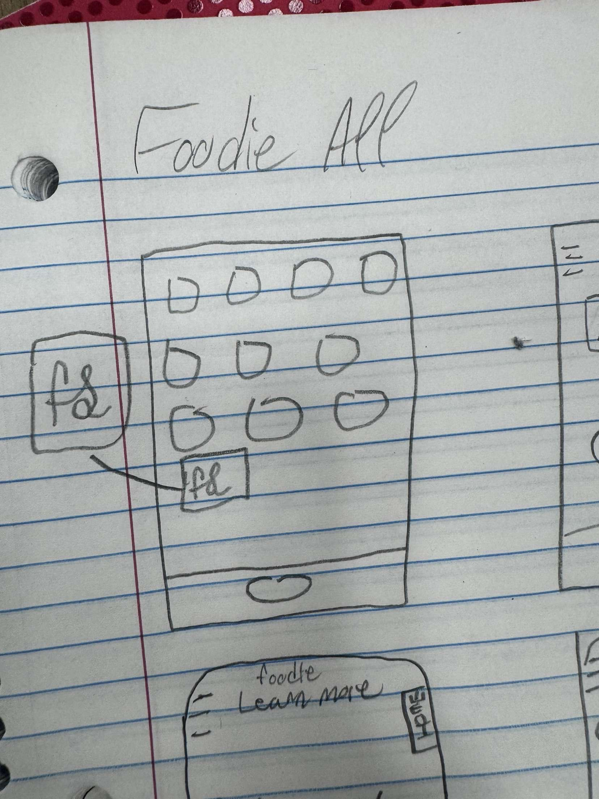

Hello my name is William Alvey! I am currently studying Integrated Computer Information Systems at the University of South Carolina! After graduating I
plan further my education and get a Masters in Business. After that, I plan on starting my own cybersecurity business.
Problem Statement

How to identify the causes of food waste on campus and implement
effective strategies to reduce it while promoting sustainability.
Affinity Diagram

This diagram visually groups causes of campus food waste and presents solutions for reducing it and focusing on sustainability. Key clusters include education, sustainable practices, technology, and policy changes, offering actionable insights for creating a greener campus.
Sketches

The sketches provided are a layout of an app that would be used for the solutions of the problem statement.
Prototype

This prototype shows the basics of how our mobile app will provide the users experience to learning about ways to prevent wasteful food practices.